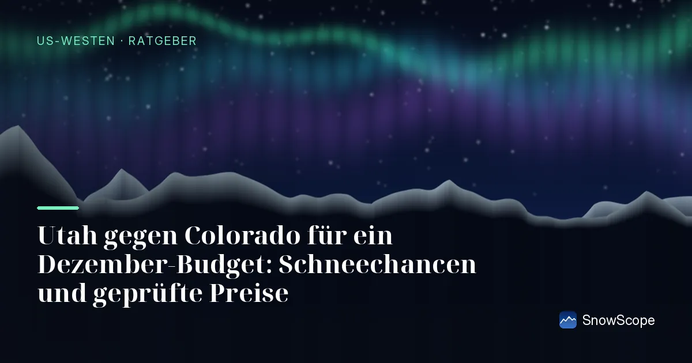

Utah gegen Colorado für ein Dezember-Budget: Schneechancen und geprüfte Preise
Utah hat den Ruf des frühen Pulverschnees, Colorado den der Höhe. Für eine Dezemberreise mit Budget haben wir zwei Gebiete in Utah und vier in Colorado anhand derselben Zahlen verglichen: typischer Schnee am 15. Dezember, der Anteil der Winter mit mindestens 20 in (50 cm), und der Erwachsenenpreis auf jeder offiziellen Seite.
Die Live-Schneeprognose für Utah and Colorado in der SnowScope-AppSchneehöhen, Pulverschnee-Alarme und 3D-Karte, gratis.
Utah: ein Star, eine Münzwurf-Wette
Brighton ist der Star Utahs. Die Mittelstation hatte an einem typischen 15. Dezember 37 in (94 cm) und in 89 % der Winter 20 in oder mehr; selbst ein schneearmer Dezember (einer von zehn) ließ dort noch 20 in (52 cm) übrig. Tickets starten bei 72 $, wenn man früh kauft.
Beaver Mountain, nahe Logan, ist der umgekehrte Tausch: ein fester Erwachsenenpreis von 75 $ ohne Spitzenzuschlag, aber nur 22 in (57 cm) auf Mittelstationshöhe an einem typischen 15. Dezember und nur 57 % der Winter über 20 in. Zum Vergleich: Park City hatte 25 in (64 cm) und 72 %; dessen Preise haben wir nicht verglichen.

Colorado: niedrigere Böden, dünnere Basen
Colorado hat die niedrigsten Preise der beiden. Ski Cooper kostet 49 $ unter der Woche und 99 $ am Wochenende und an Feiertagen, mit 26 in (66 cm) auf Mittelstationshöhe an einem typischen 15. Dezember und 70 % der Winter über 20 in. Loveland verkauft Online-Tickets für 60 $ bis zum 13. Dezember, danach 159 $ am Schalter, mit 29 in (74 cm) und 67 %. Sunlight startet bei 74 $, mit 26 in (67 cm) und 72 %.
Wolf Creek ist Colorados schneereichste Budget-Wahl in unseren Zahlen: 34 in (87 cm) an einem typischen 15. Dezember und 72 % der Winter über 20 in, bei 96 $ an normalen Tagen und 110 $ an Spitzentagen. Es hat aber auch die größte Schwankung: Ein schneearmer Dezember ließ dort nur 5 in (12 cm) übrig. Vail hatte zum Vergleich 24 in (62 cm) und 70 %.
Früher Dezember gegen die Weihnachtswoche
Am 1. Dezember ist der Unterschied deutlich: Brighton hat an einem typischen Winter 28 in (70 cm) auf Mittelstationshöhe, Wolf Creek 24 in (60 cm), Loveland und Sunlight 20 in (50 bis 51 cm), Ski Cooper 18 in (46 cm) und Beaver Mountain 16 in (40 cm).
Bis Weihnachten schließt sich das Feld. Der Anteil der Winter mit 20 in oder mehr auf Mittelstationshöhe liegt bei 98 % in Brighton, 87 % in Sunlight, 80 % in Loveland, Ski Cooper und Beaver Mountain, und 78 % in Wolf Creek.
Das Fazit
Für eine Reise Anfang Dezember gewinnt Utah, wegen Brighton. Für den niedrigsten Preis unter der Woche gewinnt Colorado, wegen Ski Cooper und Lovelands frühen Online-Tickets. Für die Weihnachtswoche sind beide Staaten schneetechnisch in Ordnung, und die günstigste Wahl hängt davon ab, ob die eigenen Termine auf Wolf Creeks Spitzentage oder Ski Coopers Wochenendpreis fallen.
Tipps für Skifahrer
- Anfang Dezember: Brighton, so früh wie möglich online gekauft.
- Wochentags-Skifahrer in Colorado: Ski Cooper für 49 $, oder Loveland für 60 $ online vor dem 14. Dezember.
- Wolf Creek: im Schnitt am schneereichsten, aber vor einer langen Fahrt die Schneekarte prüfen.
- Beide Staaten haben Bergstraßen mit Ausrüstungspflicht: Ketten mitnehmen oder mit Allrad und guten Reifen fahren.
Quellen und Nachweise
- Brighton Resort, lift tickets 2026/27 (official) www.brightonresort.com/lift-tickets
- Beaver Mountain, tickets and passes 2026-2027 (official) www.skithebeav.com/tickets-and-passes/
- Wolf Creek Ski Area, tickets and passes 2026-2027 (official) wolfcreekski.com/tickets-passes/
- Loveland Ski Area, lift tickets 2026-27 (official) skiloveland.com/lift-tickets/
- Ski Cooper, day pass 2026-27 (official) www.skicooper.com/cooper-day-pass/
- Sunlight Mountain Resort, lift tickets (official) sunlightmtn.com/lift-tickets/
Zu diesen Zahlen
Schneewerte: SnowScope-Schneehistorie, 46 vergangene Winter (1980-81 bis 2025-26) auf den angegebenen Höhen (Tal, Mitte, Gipfel), eine höhenkorrigierte Rekonstruktion des früheren Schnees für eine Fläche (auf Basis von ERA5-Land; Snow_Hydro 1 km für Marokko), keine Meldungen des Skigebiets. Aktueller Schnee: die SnowScope-Schneekarte. Lifte, Pisten und Höhen: OpenSkiMap-Kartierung. Preise: die unten genannten offiziellen Seiten, gelesen am 13. November 2026; dynamische Preise ändern sich mit Datum und Nachfrage.
Diesen Bericht zitieren
Für Forschung, Lehre oder Presse: Zahlen und Grafiken sind unter CC BY 4.0 mit dieser Quellenangabe frei nutzbar.
SnowScope (2026), Utah gegen Colorado für ein Dezember-Budget: Schneechancen und geprüfte Preise, https://snowscope.app/blog/de/2026/11/utah-vs-colorado-december-ski-budget-2026.html, abgerufen am 2026-11-14
SnowScope (Atlas Labs). (2026, November 14). Utah gegen Colorado für ein Dezember-Budget: Schneechancen und geprüfte Preise. SnowScope snow reports. https://snowscope.app/blog/de/2026/11/utah-vs-colorado-december-ski-budget-2026.html
BibTeX
@misc{snowscope2026utahvscoloradodecembersk,
author = {{SnowScope (Atlas Labs)}},
title = {Utah gegen Colorado für ein Dezember-Budget: Schneechancen und geprüfte Preise},
year = {2026},
month = nov,
howpublished = {\url{https://snowscope.app/blog/de/2026/11/utah-vs-colorado-december-ski-budget-2026.html}},
note = {Published 2026-11-14 20:11 UTC; accessed 2026-11-14}
}· CC BY 4.0 · Methoden, Daten und Werkzeuge →
Utah and Colorado folgen
Gratis: eine Nachricht, wenn Neuschnee kommt, und jeden Morgen die Vorhersage.